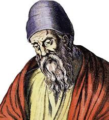

Euclid was an ancient Greek mathematician, often referred to as the "Father of Geometry." His work, particularly the book "Elements," laid the foundation for modern geometry and influenced centuries of mathematical thought.
Key Contributions:
- Authored "Elements," one of the most influential works in the history of mathematics, which served as the main textbook for teaching mathematics, particularly geometry, for over 2,000 years.
- Developed the axiomatic method, building geometry from a small set of definitions, postulates, and logical deductions.
- Contributed to the theory of prime numbers, the classification of geometrical objects, and the study of mathematical proofs.
- His work laid the groundwork for later developments in algebra, calculus, and mathematical logic.
Fun Facts:
- Euclid's "Elements" contained 13 books, covering a wide range of topics, including plane geometry, number theory, and solid geometry.
- Although little is known about his life, Euclid's systematic approach to mathematics has earned him an enduring legacy in the field of geometry.
- Euclid's axiomatic method, used in "Elements," is still the foundation of mathematical proofs today.
Legacy:
Euclid's contributions to mathematics, particularly his systematic approach to geometry and mathematical proof, continue to shape the way mathematics is taught and understood. His work on geometry has been foundational to both theoretical and applied mathematics, influencing generations of mathematicians, scientists, and engineers.
← Back to Timeline